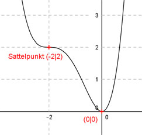

Aufgabe 88 Der Graph einer ganzrationalen Funktion 4. Grades hat im Punkt (0|0) eine waagerechte Tangente und in (-2|2) einen Sattelpunkt. Wie lautet seine Funktionsgleichung?  Allgemeine Form einer ganzrationalen Funktion 4. Grades: f(x) = ax4 + bx3 + cx2 + dx + e f’(x) = 4ax3 + 3bx2 + 2cx + d f’’(x) = 12ax2 + 6bx + 2c 5 Bedingungen: 1. Hat im Punkt (0|0) eine waagerechte Tangente bedeutet zum einen: f(0) = 0 --> a * 04 + b * 03 + c * 02 + d * 0 + e = 0 --> e = 0 2. Hat im Punkt (0|0) eine waagerechte Tangente bedeutet zum anderen: f’(0) = 0 --> 12a * 02 + 6b * 0 + 2c * 0 + d = 0 --> d = 0 3. Hat in (-2|2) einen Sattelpunkt bedeutet erstens: (d = 0 und e = 0 eingesetzt) f(-2) = 2 --> a * (-2)4 + b * (-2)3 + c * (-2)2 = 2 --> 16a - 8b + 4c = 2 I 4. Hat in (-2|2) einen Sattelpunkt bedeutet zweitens: (d = 0 eingesetzt) f’(-2) = 0 --> 4a * (-2)3 + 3b * (-2)2 + 2c * (-2) = 0 --> -32a + 12b - 4c = 0 II 5. Hat in (-2|2) einen Sattelpunkt bedeutet drittens: f’’(-2) = 0 --> 12a * (-2)2 + 6b * (-2) + 2c = 0 --> 48a - 12b + 2c = 0 III I + II 16a - 8b + 4c = 2 -32a + 12b - 4c = 0 -------------------- -16a + 4b = 2 IV III * 2 + II 96a - 24b + 4c = 0 -32a + 12b - 4c = 0 -------------------- 64a - 12b = 0 V IV * 3 + V -48a + 12b = 6 64a - 12b = 0 --------------- 16a = 6 |:16 6 3 a = ---- = --- 16 8 a = 3/8 in V eingesetzt: 64 * (3/8) - 12b = 0 24 - 12b = 0 |-24 -12b = -24 |:(-12) b = 2 a = 3/8 und b = 2 in I eingesetzt: 16 * (3/8) - 8 * 2 + 4c = 2 6 - 16 + 4c = 2 -10 + 4c = 2 |+10 4c = 12 |:4 c = 3 Gesuchte Funktionsgleichung: f(x) = (3/8)x4 + 2x3 + 3x2